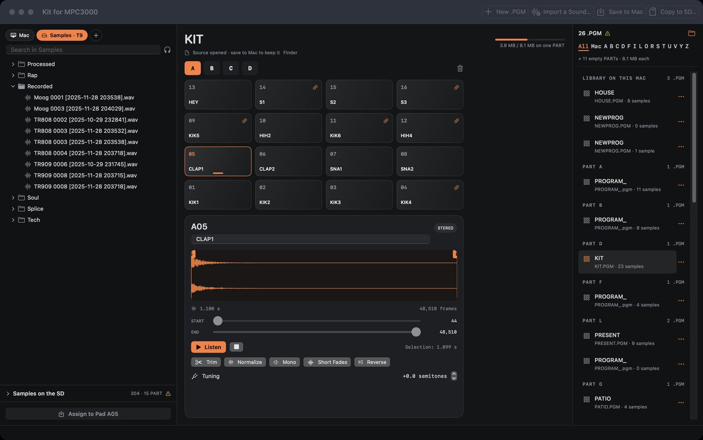
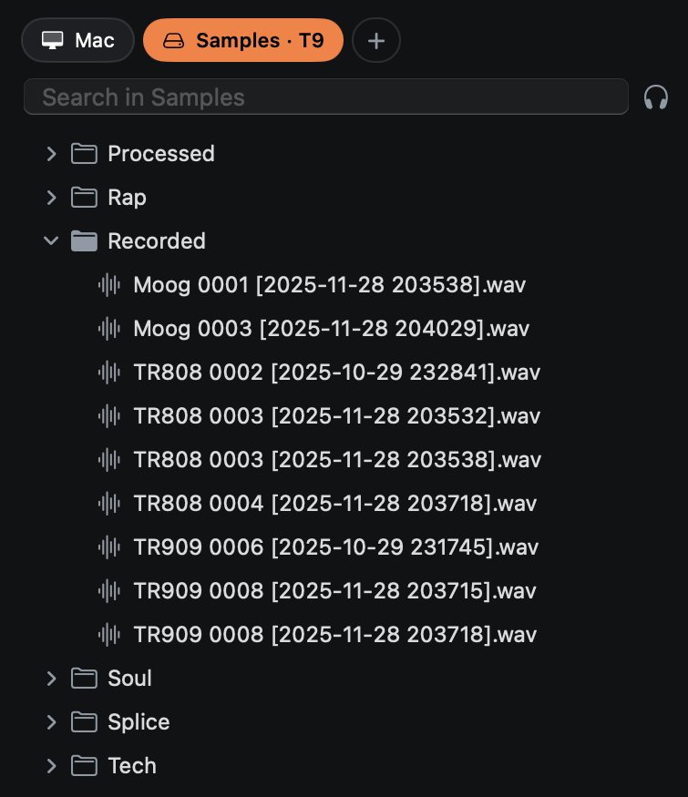
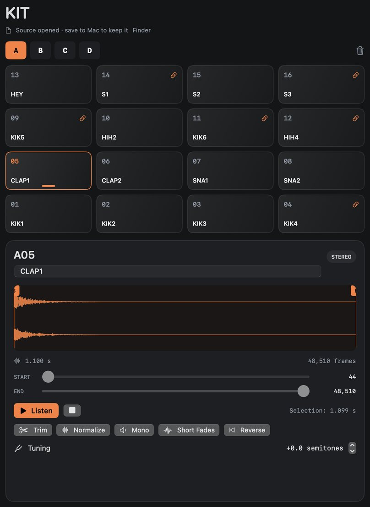
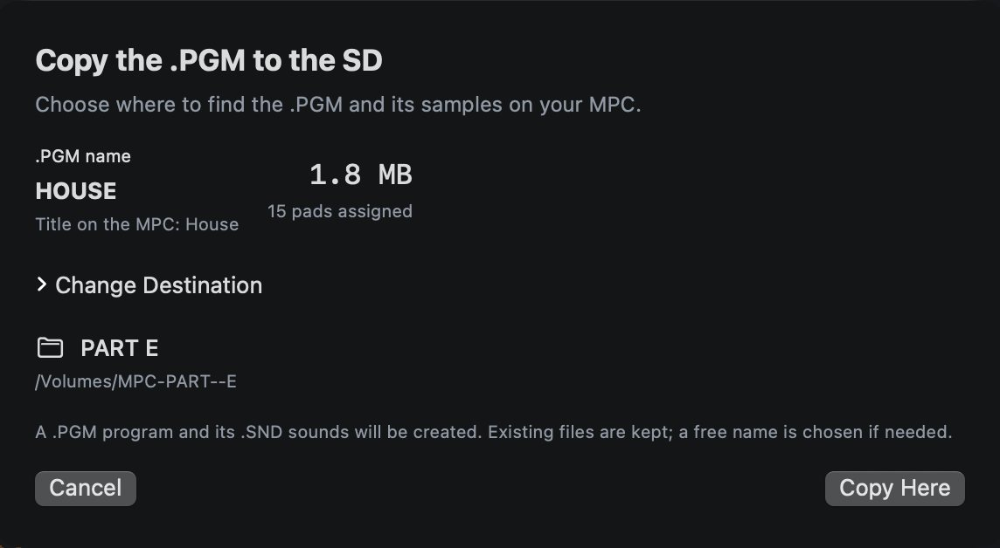

Kit for MPC3000
Sample banks for the MPC3000, prepared on a Mac.

My MPC3000 reads an SD card instead of a hard drive. Getting samples onto it was always the slow part: converting the files, keeping every name to eight characters, checking that the bank fits in a partition, then copying the right files to the right place. Kit for MPC3000 does that part for me.
I’m not a developer. I decided what the app should do, an AI (Claude) wrote the code, and I tried each version with my own card and samples. I’m selling it to the few people who have the same setup, for what it is.
What it does
- You drag WAV, AIFF or SND files onto the 64 pads, A01 to D16. They’re converted to the MPC’s SND format.
- You browse your sample folders as a tree and listen with a click.
- You name, trim and tune each sample, and you see the eight-character name that will be written to the card.
- Before copying, it tells you whether the bank fits in one partition.
- It copies the program and its sounds to an empty partition. Nothing already on the card is overwritten or deleted.
- Your programs stay in a library on the Mac, with or without the card.



Details
- Works with
- An MPC3000 running Vailixi OS 3.50, a SCSI-to-SD adapter model, and a card formatted by the MPC with Hybrid partitions, which the Mac mounts as MPC-PART--A to Z.
- Not with
- Other MPCs, floppy disks or Zip drives. The original Akai OS is untested.
- Mac
- macOS 27 or later, the only version tested. Apple Silicon (M1 and later).
- Language
- English and French. The app follows your Mac’s language.
- Internet
- The app never connects to it.
- Support
- None. Fixes when I run into a bug.
- Price
- €29 including VAT, paid once.
Before you buy
There is no support. When a bug gets in my way, I fix it, and the update is yours as well. I won’t add features on request: the app does what I need, and I want to keep it small.
It doesn’t open sequences, it doesn’t play like an MPC, and the preview doesn’t reproduce the MPC’s filters or envelopes. Make a copy of your card before using it. I keep one of mine.
Buy
€29 incl. VAT
You get the Mac app, signed and notarized by Apple, and the updates to version 1. After you pay, the download is on the page you land on. If it doesn’t work with your setup, write to me within 14 days and I’ll refund you.
Payment goes through Link, Stripe’s checkout, which sends you the receipt and the invoice. VAT is included in the price.
Questions
- Does it work with the original Akai OS?
- I don’t know, I haven’t tried. On my machine, it’s the Hybrid partitions of Vailixi 3.50 that let the Mac read the card.
- Which adapter do you use?
- model. Kit for MPC3000 doesn’t talk to the adapter. It only reads the partitions macOS mounts.
- Does it work on an older macOS?
- It isn’t supported. I’ve only tested it on macOS 27, and on an older version the card check can refuse a real card.
- Is the app in English?
- Yes. It follows your Mac’s language: English, or French if your Mac is set to French.
- Can I share it?
- There’s no copy protection. If a friend ends up using it, I’d be glad if they bought their own.
- How do updates work?
- Keep the page you reach after paying: it always gives you the latest version. The app doesn’t check on its own.
- How do I reach you?
- nicolas@rewolf.studio. I read everything, I don’t always answer.